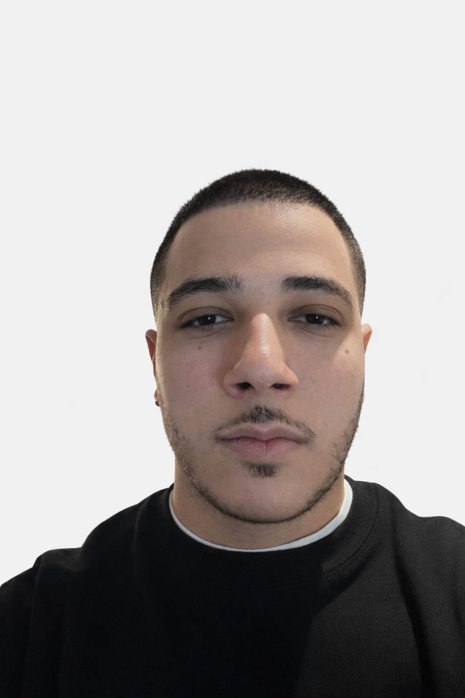

I am Joseph Suhail, a cybersecurity student focused on building strong skills in network security, system protection, and technical problem solving through coursework, projects, and continuous learning.

This website highlights my academic development, growing technical foundation, and the work I continue to build as I move toward a future in cybersecurity.